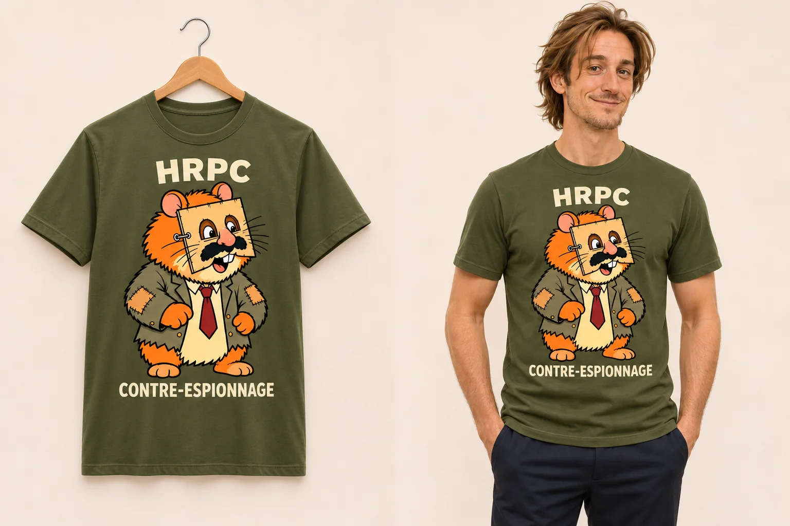

H.01 · CRCC
T-shirt Cigarolo — Le Comité
Écru · Jersey de coton
« Le Comité a pris acte. »Voir la pièce et ses visuels →
Votre couverture semble irréprochable.

Le hamster du HRPC présente son meilleur déguisement humain : un carton, deux trous et une moustache. Le T-shirt d’une organisation dont les méthodes restent immédiatement reconnaissables.
Portrait du hamster au masque en carton, entre « HRPC » et « CONTRE-ESPIONNAGE », sur le devant.
Ne garantit aucun anonymat, même de loin.